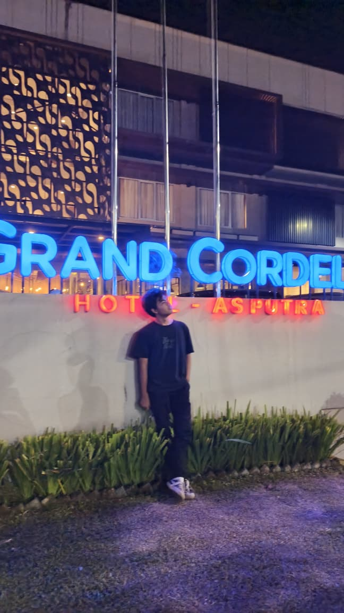

Foto Profil

Identitas Diri
| Nama Lengkap | Rafi Bachtiar Adhimukti |
|---|---|
| Nama Panggilan | Rafi |
| Tempat, Tanggal Lahir | Kuningan, 13 Juni 2007 |
| Jenis Kelamin | Laki-laki |
| Agama | Islam |
| Kewarganegaraan | Indonesia |
| Status | Mahasiswa |
Kontak dan Alamat
Alamat: RT/RW 021/006, Kelurahan Windusengkahan, Kecamatan Kuningan, Kabupaten Kuningan
Nomor Telepon: +62 897-9268-704
Email: rafibahtiar84@gmail.com
Pendidikan
- Universitas Kuningan - Sistem Informasi (2025-2029)
- SMAN 1 Cigugur - Kimia (2022-2025)
- SMPN 1 Kuningan (2019-2022)
- SDN 1 Windusengkahan (2013-2019)
Keterampilan
- Berkomunikasi secara jelas dan efektif
- Mengatur serta mengoordinasikan kerja tim
- Merencanakan dan menyelenggarakan acara
Hobi dan Minat
- Badminton
- Futsal
- Membuat event outdoor
Pengalaman Organisasi
- Pecinta Alam Bwana Paksa - Anggota (2022-2023)
- Karang Taruna - Anggota acara (2023-2024)
- Pecinta Alam Bwana Paksa - Peralatan dan humas (2023-2024)
- Forum Pecinta Alam Kabupaten Kuningan - Wakil ketua (2023-2024)
- Karang Taruna Kelurahan Windusengkahan - Ketua divisi PDD (2024-2025)
- Pecinta Alam Bwana Paksa - Dewan normatif (2024-2025)
- Ikatan Keluarga Alumni Pecinta Alam Bwana Paksa - Ketua (2025-2026)
- Himpunan Mahasiswa Sistem Informasi Universitas Kuningan - Divisi Keorganisasian (2025-2026)
Deskripsi Singkat
Sebagai mahasiswa Sistem Informasi yang aktif dalam kegiatan organisasi, saya terus mengembangkan kemampuan komunikasi, kerja sama, dan pengelolaan kegiatan. Saya ingin menggunakan pengalaman tersebut untuk memberi dampak positif sekaligus terus belajar dan berkembang bersama lingkungan baru.